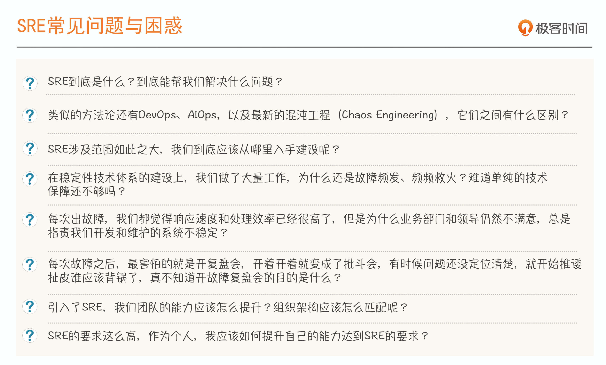
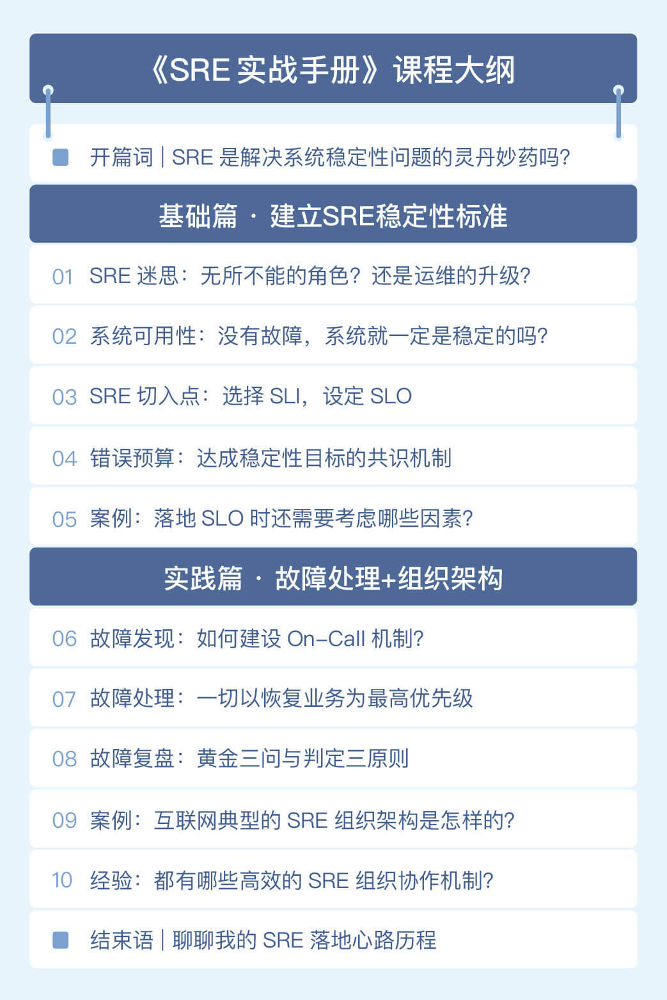

- 00 开篇词 SRE是解决系统稳定性问题的灵丹妙药吗？.md.html
- 01 SRE迷思：无所不能的角色？还是运维的升级？.md.html
- 02 系统可用性：没有故障，系统就一定是稳定的吗？.md.html
- 03 SRE切入点：选择SLI，设定SLO.md.html
- 04 错误预算：达成稳定性目标的共识机制.md.html
- 05 案例：落地SLO时还需要考虑哪些因素？.md.html
- 06 故障发现：如何建设On-Call机制？.md.html
- 07 故障处理：一切以恢复业务为最高优先级.md.html
- 08 故障复盘：黄金三问与判定三原则.md.html
- 09 案例：互联网典型的SRE组织架构是怎样的？.md.html
- 10 经验：都有哪些高效的SRE组织协作机制？.md.html
- 答疑 没什么能阻挡你拓展边界的渴望.md.html
- 结束语 聊聊我的SRE落地心路历程.md.html
- 捐赠
00 开篇词 SRE是解决系统稳定性问题的灵丹妙药吗？
你好，我是赵成，欢迎加入我的课程，和我一起学习SRE。
为了加强彼此的了解，我先做个简单的自我介绍吧。我在基础架构和运维领域工作有10多年了，现在负责蘑菇街平台技术部，主导中间件、稳定性、工具平台、运维和安全等工作。
2017年底，我在极客时间开了一门课程，叫《赵成的运维体系管理课》，系统整理并分享了我在运维和DevOps方面的经验，带给你不一样的运维思考。
这两年，近距离地接触了很多不同类型、不同规模的企业IT团队，我发现他们为了提升用户价值的交付效率，都在积极采用微服务、容器，以及其他的分布式技术和产品，而且也在积极引入像DevOps这样的先进理念。
这些公司选择了正确的架构演进方向和交付理念，效率自然是提升了一大截。这样的情况，是不是也发生在你的公司、发生在你自己身上？这时候你会发现，效率提升了，但挑战紧跟着也来了：在引入了这么多先进的技术和理念之后，这种复杂架构的系统稳定性很难得到保障，怎么办？
这个问题其实不难回答，答案就是SRE。
这几年业界对SRE的关注越来越多，大家也几乎达成了共识，Google SRE就是目前稳定性领域的最佳实践。也可以说，SRE已经成为稳定性的代名词。
SRE这么厉害，是有什么神奇之处吗？其实，SRE要做的事情并不神秘，我们每天做的监控告警、运维自动化、故障处理和复盘等工作，就是SRE的一部分。你也会发现，Google在介绍SRE的时候，很多篇幅介绍的就是这些我们熟悉的内容。
最近两年，我和团队也花了很多精力来做稳定性保障方面的事情，不断地探索在SRE方面的实践。比如，在日常的稳定性规范制定，监控、压测、服务治理、大促稳定性保障，故障应急和管理，以及组织架构建设等方面，我们都做了尝试，也积累了很多经验。
2019年6月，在SRE领域最具国际影响力的SRECon上，我分享了蘑菇街在容量压测方面的实践经验，和来自全球各大公司的同行们做了一次深度交流，让他们也见识了国内电商大促稳定性保障的技术实力。
从这些经验和交流探讨中，我收获了一条宝贵的经验：要想系统地做好稳定性这件事儿，SRE就是必修科目。
同时，我也深刻体会到落地SRE会遇到各种问题，深知大家对SRE的困惑。所以，我系统梳理了自己的经验和调研，打磨出这个课程，目的就是帮你构建起体系化建设SRE的思路。
标杆立在那里，落地SRE有哪些问题？
那SRE在落地时具体会有哪些问题呢？接下来，我先说个我经常遇到的场景吧。
我在外部参加会议演讲或参与交流的时候，经常会有一些朋友向我求助，这里不乏一些公司的CTO、技术VP、总监或架构师，让我帮忙推荐运维或SRE专家。
每次遇到这样的情况，我都会问，你们现在遇到了什么问题，对这样的专家有什么要求。他们就会告诉我当前他们团队遇到的一些状况，比如系统三天两头出问题，有时候遇到一些问题，一排查就要老半天，特别是引入了微服务架构后，问题好像更多了。为了解决这些问题，开发和运维都要投入很多精力，结果却不尽如人意：系统不稳定会被业务团队投诉，好，那就赶快处理问题，但是这时候需求来了，响应不及时，业务团队又会不满意。事后，还要为了谁承担责任推来推去，对团队氛围影响很大。
这种人困马乏却谁都不满意的情况多了，我们就特别希望能找到一招制胜的办法。
这时候，SRE就被当作了灵丹妙药。因此，他们希望我能介绍一些这样的专家，来了就能把这样的问题干脆利落地统统解决掉。
说实话，每次遇到这样的问题，我都非常犯难。因为我发现我身边这样的大牛或专家也非常稀缺，还真不好推荐。另外，也是更重要的一点，从根本上来说，这绝不是招一两个或几个专家就能解决的问题。
那，为什么大家还总是向我提出推荐SRE专家这样的求助呢？很明显，这是大家对SRE的理解出现了偏差。很多人想当然地认为，SRE就是一个岗位，是一个角色，而且是无所不能的角色。
当然，这只是其中的问题之一。在实际落地SRE时，我们要么是不知道该从何入手，要么就是开始了却总会掉进这样那样的坑里，遇到各种问题和疑惑。
我将大家遇到的问题和疑惑，汇总到了下面这个清单里：

清单很长，你看完什么感受？这些问题不是我凭空臆想出来的，而是在跟众多企业IT团队交流和调研的过程中，我被问及最多、最频繁的问题。
问题虽然多，但总结起来其实就是两大类：
- 理念：SRE到底是什么？我们应该怎么来理解它？有哪些关键点？
- 实践：到底应该从哪里入手建设SRE？组织架构应该怎么匹配？
这些问题确实令人头痛，不过也不用害怕，我先给你吃一颗定心丸，这些问题我们都可以解决。
比如，你想要找到建设SRE体系的切入点，最好的办法就是建立稳定性的标准化。有时你会和周边团队就稳定性问题产生一些争执，说到底就是因为你们没有达成共识的、统一的衡量标准。Google SRE已经给我们提供了很好的标准化手段，也就是SLO。你看，这个问题不就得到解决了吗？
再比如，组织架构如何建设的问题，虽然Google没有给出放之四海而皆准的答案，但经过多年的实践，很多互联网公司甚至是传统企业，都已经积累了很丰富的经验。借鉴这些经验，建设组织架构的问题也能解决。
接下来，这个课程就会带你一一攻克这些问题。
这门课程是如何设计的？
具体来说，整个课程分为两个部分。
第一部分，夯实基础，带你建立SRE稳定性标准。
在这一部分，我会先讲清楚SRE是什么，以及业界衡量稳定性的标准是什么。我会把SLO作为引入SRE的切入点，因为它就相当于我们稳定性标准化的基础。同时，SLO也是稳定性保障的共识机制，有了这个共识，我们才能更好地管理稳定性，消除掉来自周边团队的很多不理解和不认可。
同时，在这一部分我还会引入一个电商的案例，跟你一起看一下，在实际的场景中设定SLO应该考虑哪些因素。
第二部分，SRE最佳实践。
这一部分，我会从“故障”和“组织架构”这两个关键词入手来讲。
第一个是“故障”。我会围绕故障这个影响稳定性的核心事件，结合实践案例，分享应该从哪些方面减少故障发生次数，缩短故障影响时间，进而提升系统可用性及稳定性。
第二个是“组织架构”。这是做SRE绕不开的关键问题，要想做好SRE的落地，必须得有与之匹配的组织架构和协作机制。我会结合我的实践经验，以及我了解到的行业经验，让你看到真实的组织架构设置和跨团队协作模式。

通过这两个维度的学习，从理念到实践，我相信可以系统地解答你心中很多关于SRE的具体疑惑。如果你想从0到1建设SRE体系，有效地管理好你的系统稳定性，希望有一个合理的组织架构有效应对各种稳定性问题，那就和我一起学习吧。
另外，我想和你说说答疑相关的事情。SRE是个非常体系化的内容，我们的课程不会面面俱到。但是没关系，在学习过程中，你可以在留言区大胆提出你的任何疑惑，分享你的思考，我会在留言区答复，和你交流探讨；同时，我也会挑选有代表性的问题，单独成文，有针对性地做补充分享，作为答疑加餐发布出来。
最后，我还想再多啰嗦几句。答案很重要，但往往并不是最重要的东西，在探寻答案的过程中，我们获得的思路和方法更有意义，因为它们可以帮助我们举一反三，在未来更多的场景中发挥价值。希望接下来我们一起探索SRE的这个过程，也能有这样的价值。
好了，那咱就正式开始SRE的学习之旅吧！对了，你是怎么看SRE的？目前都有哪些困惑呢？记得留言和我说说你的情况。
我是赵成，再次欢迎你来到我的课程，我们下一讲见！
© 2019 - 2023 Liangliang Lee. Powered by gin and hexo-theme-book.